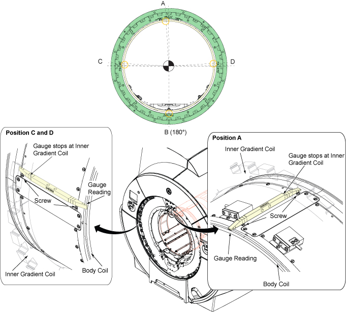

- 00000018WIA306EEE20GYZ
- id_131064333.9
- Jul 7, 2025 6:56:19 AM
Body Coil Alignment
Prerequisites
| Personnel requirements | |||
|---|---|---|---|
| Required persons | Preliminary requirements | Procedure | Finalization |
| 1 | - | 30 minutes | - |
| Tools and test equipment | |||
|---|---|---|---|
| Item | Quantity | Part number | Manufacturer |
| Non Magnetic Tool including Allen Wrench to adjust body coil RL position | 1 | - | - |
| Step Gauge (Placed at rear mounting bracket) | 1 | 5492609 | - |
| Safety | ||||
|---|---|---|---|---|
|
Before working in any GE HealthCare MR suite or doing any GE HealthCare service procedure, you must:
If you have any safety concerns at any time, do not begin work or immediately stop work and move to a safe location. Immediately contact your supervisor or site safety officer for instructions on how to proceed. | ||||
| ||||
| Required conditions |
|---|
| LOTO ISC is performed. Applying LOTO - Integrated System Cabinet (ISC) |
| Front End Bell is removed |
| Rear End Bell is removed |
About this task
Measurement will be performed at 4 locations for both Front and Rear.
Since there are former supports at 0 degree, 90 degree, and 270 degree positions and it prevents the correct measurement, the gauge will be placed next to the screws near former support (Position A, C, and D in illustration below). At 180 degree (Position B), there is no former support and measurement will be done at 180 degree position.

| ID | Position |
|---|---|
| A | Top Measurement Position |
| B | Bottom Measurement Position |
| C | Left Measurement Position |
| D | Right Measurement Position |
Note New type of Body Coil support is introduced in Q3, 2016. Two types of body coil support are shown in this procedure.
Body Coil AP Alignment
Procedure
- Confirm that screws and nuts shown in the following illustration
are tightened for Front side and Rear side.
Figure 4. Confirmation 
Body Coil RL Alignment
Procedure
- Confirm that screws and nuts shown in the following illustration
are tightened for Front side and Rear side.
Figure 8. Confirmation
Final Check
Procedure
- After re-tightening any loosened nuts, check RL position and AP position of Front End and Rear End again per Body Coil AP Alignment and Body Coil RL Alignment and adjust the position if necessary until the specifications are satisfied.
- Restore Step Gauge at rear mounting bracket.
- If you are doing RF Body Coil Replacement Procedure, return to the original procedure. Changing RF Body coil isolation/alignment will affect coil tuning